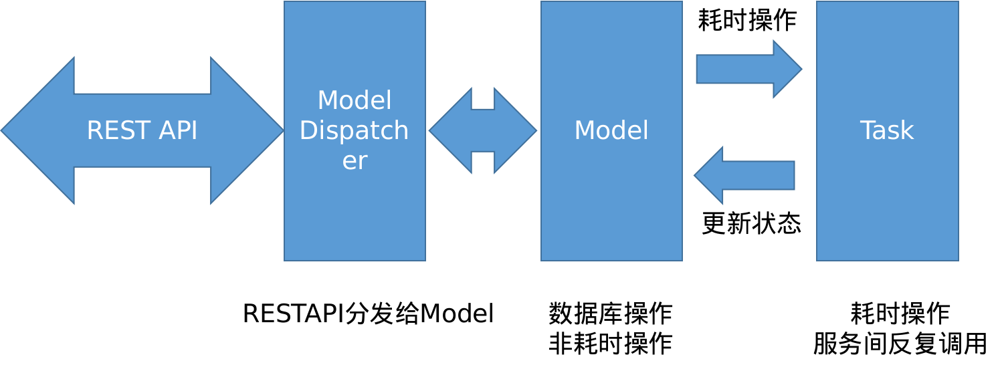
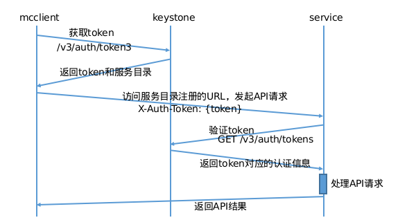

后端服务框架
介绍云平台后端服务所用的框架和相关库的使用方法，建议先阅读 “开发相关/服务组件介绍” 了解各个服务大概的功能。
后端服务框架
keystone, region, glance 等后端服务，都是用的同一套后端服务框架，这个框架是我们自己定义实现的，核心模块如下:

-
REST API: 负责解析客户端发送的 CRUD http 请求，将不同的请求对应到 Model Dispatcher 模块。
-
Model Dispatcher: 将客户端的请求分发到对应资源的业务操作。
-
Model: 定义云平台各种资源，会进行数据库读写相关操作，如果具体业务需要进行耗时操作，会通过 Task 机制来执行耗时任务。
-
Task: 后台处理异步耗时任务的模块，会通过更新 Model 的状态来更新任务的执行结果。
云联壹云 代码结构
- build: 打包rpm脚本
- cmd: 可执行binary入口程序
- pkg: 库
- appsrv: 通用http服务框架
- cloudcommon: 云平台服务框架，基于appsrv扩展
- cloudcommon/options: 通用options
- cloudcommon/app: 通用服务初始化代码
- cloudcommon/db: Model dispatcher和Models的基础实现
- cloudcommon/db/lockman: 锁实现
- cloudcommon/db/taskman: 异步任务框架
认证部分

- 客户端向服务发起请求前，需要从keystone获得token
- 客户端通过携带用户名密码调用keystone的/v3/auth/tokens接口获得token
- 客户端向服务发起的每次API请求都会在HTTP头携带该token，比如: X-Auth-Token: {token}
- 后端服务向keystone验证该token，获得用户的身份信息，执行后续API的流程
- 每个服务都有一个keystone注册的服务用户账号（user/password)，并且以admin角色加入system项目
- 服务启动后，会向keystone发起认证，获得admin token
- 用户通过API访问服务时，将在header携带token
- 使用这个admin token访问keystone的token验证接口，验证这个token，获得用户的身份信息
Model Dispatcher
把 REST API 和 Model 的方法进行一一映射
| REST 请求 | Model 方法 | 说明 |
|---|---|---|
| GET /<resources> | AllowListItems | List的权限判断 |
| - | ListItemFilter | 过滤 |
| - | GetCustomizeColumns | 获得扩展字段的信息 |
| GET /<resources>/<res_id> | AllowGetDetails | Get 的权限判断 |
| - | GetExtraDetails | 获取扩展字段的信息 |
| GET /<resources>/<res_id>/<spec> | AllowGetDetails<Spec> | 获取资源特定属性的权限判断 |
| - | GetDetails<Spec> | 获取资源特定属性 |
| POST /<resources> | AllowCreateItem | 创建操作的鉴权 |
| - | ValidateCreateData | 校验和处理创建的数据 |
| - | CustomizeCreate | 自定义的创建操作 |
| - | PostCreate | 创建后的hook |
| - | OnCreateComplete | 创建完成的hook |
| POST /<resources>/<res_id>/<action> | AllowPerformAction<Action> | 某个资源执行特定操作的鉴权判断 |
| - | Perform<Action> | 某个资源执行特定操作 |
| PUT /<resources>/<res_id> | AllowUpdateItem | 对指定资源更新操作的鉴权 |
| - | ValidateUpdateData | 校验和处理更新操作的数据 |
| - | PreUpdate | 自定义的创建操作 |
| - | PostUpdate | 创建后的hook |
| DELETE /<resources>/<res_id> | AllowDeleteItem | 删除指定资源的鉴权 |
| - | CustomizeDelete | 自定义的删除操作 |
| - | PreDelete | 删除前的hook |
| - | Delete | 执行删除操作 |
| - | PostDelete | 删除后的hook |
具体 restful 请求的绑定函数在: pkg/appsrv/dispatcher/dispatcher.go 文件中的 AddModelDispatcher 函数。
数据库 ORM 模型
代码位于 cloudcommon/db
- 接口
- IModelManager: 对应资源在数据库里面的表
- IModel: 对应资源在数据库里面的单条数据
- 数据结构
- SResourceBase: 基础资源
- SStandaloneResourceBase: 基础设施的物理资源，没有具体ownerId的资源，如zone, host
- SVirtualResourceBase: 虚拟资源，如虚拟机（guest)
- SSharableVirtualResourceBase: 虚拟的可以共享的虚拟资源，如disk, network
- SAdminSharableVirtualInfoBase: 管理配置用的可共享虚拟资源，如security group
- SSharableVirtualResourceBase: 虚拟的可以共享的虚拟资源，如disk, network
- SVirtualResourceBase: 虚拟资源，如虚拟机（guest)
- SJointResourceBase: 联合数据类型，如虚拟网卡是虚拟机和网络的联合，虚拟磁盘挂在：虚拟机和虚拟磁盘的联合
- SStandaloneResourceBase: 基础设施的物理资源，没有具体ownerId的资源，如zone, host
- SResourceBase: 基础资源
举例
用虚拟机的 model 来举例，代码在: pkg/compute/models/guests.go。
GuestManager 对应数据库里面的 guests_tbl，该对象嵌套 db.SVirtualResourceBaseManager 表示是虚拟资源的 Manager，这样会默认实现 db.IModelManager 接口，然后根据业务需要重写一些方法会比较方便。
SGuest 对应 guests_tbl 数据库里面的每一行数据，由 GuestManager 管理，嵌套 db.SVirtualResourceBase 结构，默认就会有虚拟资源所需要的表结构，然后再定义一些虚拟机独有的属性比如 VcpuCount 表示 cpu 核数，VmemSize 表示内存大小。 在代码抽象后表示虚拟机实例，该对象会绑定对虚拟机具体的业务操作实现函数。
import "yunion.io/x/onecloud/pkg/cloudcommon/db"
......
type SGuestManager struct {
db.SVirtualResourceBaseManager
}
var GuestManager *SGuestManager
func init() {
GuestManager = &SGuestManager{
SVirtualResourceBaseManager: db.NewVirtualResourceBaseManager(
SGuest{},
"guests_tbl",
"server",
"servers",
),
}
GuestManager.SetVirtualObject(GuestManager)
GuestManager.SetAlias("guest", "guests")
}
type SGuest struct {
db.SVirtualResourceBase
db.SExternalizedResourceBase
SBillingResourceBase
VcpuCount int `nullable:"false" default:"1" list:"user" create:"optional"` // Column(TINYINT, nullable=False, default=1)
VmemSize int `nullable:"false" list:"user" create:"required"` // Column(Integer, nullable=False)
BootOrder string `width:"8" charset:"ascii" nullable:"true" default:"cdn" list:"user" update:"user" create:"optional"` // Column(VARCHAR(8, charset='ascii'), nullable=True, default='cdn')
DisableDelete tristate.TriState `nullable:"false" default:"true" list:"user" update:"user" create:"optional"` // Column(Boolean, nullable=False, default=True)
ShutdownBehavior string `width:"16" charset:"ascii" default:"stop" list:"user" update:"user" create:"optional"` // Column(VARCHAR(16, charset='ascii'), default=SHUTDOWN_STOP)
KeypairId string `width:"36" charset:"ascii" nullable:"true" list:"user" create:"optional"` // Column(VARCHAR(36, charset='ascii'), nullable=True)
HostId string `width:"36" charset:"ascii" nullable:"true" list:"admin" get:"admin" index:"true"` // Column(VARCHAR(36, charset='ascii'), nullable=True)
BackupHostId string `width:"36" charset:"ascii" nullable:"true" list:"user" get:"user"`
Vga string `width:"36" charset:"ascii" nullable:"true" list:"user" update:"user" create:"optional"` // Column(VARCHAR(36, charset='ascii'), nullable=True)
Vdi string `width:"36" charset:"ascii" nullable:"true" list:"user" update:"user" create:"optional"` // Column(VARCHAR(36, charset='ascii'), nullable=True)
Machine string `width:"36" charset:"ascii" nullable:"true" list:"user" update:"user" create:"optional"` // Column(VARCHAR(36, charset='ascii'), nullable=True)
Bios string `width:"36" charset:"ascii" nullable:"true" list:"user" update:"user" create:"optional"` // Column(VARCHAR(36, charset='ascii'), nullable=True)
OsType string `width:"36" charset:"ascii" nullable:"true" list:"user" update:"user" create:"optional"` // Column(VARCHAR(36, charset='ascii'), nullable=True)
FlavorId string `width:"36" charset:"ascii" nullable:"true" list:"user" create:"optional"` // Column(VARCHAR(36, charset='ascii'), nullable=True)
SecgrpId string `width:"36" charset:"ascii" nullable:"true" get:"user" create:"optional"` // Column(VARCHAR(36, charset='ascii'), nullable=True)
AdminSecgrpId string `width:"36" charset:"ascii" nullable:"true" get:"admin"` // Column(VARCHAR(36, charset='ascii'), nullable=True)
Hypervisor string `width:"16" charset:"ascii" nullable:"false" default:"kvm" list:"user" create:"required"` // Column(VARCHAR(16, charset='ascii'), nullable=False, default=HYPERVISOR_DEFAULT)
InstanceType string `width:"64" charset:"ascii" nullable:"true" list:"user" create:"optional"`
}
......
数据库锁
代码位于 cloudcommon/db/lockman:
- LockClass/ReleaseClass: 锁住一类实例，一般创建资源时候需要锁
- LockObject/ReleaseObject: 锁住一个实例，一般修改资源实例是需要锁
- LockRawObject/RelaseRawObject: 通用的锁
举例
pkg/cloudcommon/db/db_dispatcher.go 里面的 DoCreate 函数会创建对应 Model 的对象并插入数据到数据库，这个时候就需要加锁。
func DoCreate(manager IModelManager, ctx context.Context, userCred mcclient.TokenCredential, query jsonutils.JSONObject, data jsonutils.JSONObject, ownerId mcclient.IIdentityProvider) (IModel, error) {
lockman.LockClass(ctx, manager, GetLockClassKey(manager, ownerId))
defer lockman.ReleaseClass(ctx, manager, GetLockClassKey(manager, ownerId))
return doCreateItem(manager, ctx, userCred, ownerId, nil, data)
}
worker队列管理
为了避免不可预期的并发度，所有异步执行的代码都应该在worker内执行，以便于管理并发度。
代码位于 appsrv/workers.go
workerman := appsrv.NewWorkerManager(name, parallel_cnt, …)
workerman.Run(func() {…}, nil, nil)
Task 机制
云平台的异步耗时任务会放在 Task 机制里面去执行，比如创建虚拟机操作，用户提交了请求，region 控制器校验参数合格后，会记录数据到数据库，然后马上返回客户端对应的虚拟机记录，与此同时，会开始执行创建虚拟机的 task，这个 task 会立即在后台执行，会通过更新虚拟机 SGuest model 的状态和记录操作日志来表示执行的成功或失败。
task 也是记录在数据库 tasks_tbl 里面的记录，对应的定义在: pkg/cloudcommon/db/taskman/tasks.go 里面，数据结构如下:
type STaskManager struct {
db.SResourceBaseManager
}
var TaskManager *STaskManager
func init() {
TaskManager = &STaskManager{
SResourceBaseManager: db.NewResourceBaseManager(STask{}, "tasks_tbl", "task", "tasks")
}
TaskManager.SetVirtualObject(TaskManager)
}
type STask struct {
db.SResourceBase
Id string `width:"36" charset:"ascii" primary:"true" list:"user"` // Column(VARCHAR
(36, charset='ascii'), primary_key=True, default=get_uuid)
ObjName string `width:"128" charset:"utf8" nullable:"false" list
:"user"` // Column(VARCHAR(128, charset='utf8'), nullable=False)
ObjId string `width:"128" charset:"ascii" nullable:"false" lis
t:"user" index:"true"` // Column(VARCHAR(ID_LENGTH, charset='ascii'), nullable=False)
TaskName string `width:"64" charset:"ascii" nullable:"false" list
:"user"` // Column(VARCHAR(64, charset='ascii'), nullable=False)
UserCred mcclient.TokenCredential `width:"1024" charset:"utf8" nullable:"false" get
:"user"` // Column(VARCHAR(1024, charset='ascii'), nullable=False)
// OwnerCred string `width:"512" charset:"ascii" nullable:"true"` // Column(VARCHAR
(512, charset='ascii'), nullable=True)
Params *jsonutils.JSONDict `charset:"utf8" length:"medium" nullable:"false" get:"us
er"` // Column(MEDIUMTEXT(charset='ascii'), nullable=False)
Stage string `width:"64" charset:"ascii" nullable:"false" default:"on_init" list:"u
ser"` // Column(VARCHAR(64, charset='ascii'), nullable=False, default='on_init')
taskObject db.IStandaloneModel `ignore:"true"`
taskObjects []db.IStandaloneModel `ignore:"true"`
}
......
- Id: STask 里面的 Id 是该 task 记录的 Id
- ObjId: 对应资源对象的 Id，用于记录执行该 task 的对应操作的资源，比如某台虚拟机、磁盘的 Id
- UserCred: 存储执行 task 的用户信息
- Params: 执行 task 的参数
- TaskName: 对应 task 的名称
- Stage: task 执行的阶段，默认为 OnInit
举例
以虚拟机关机这个操作来举例:
- 客户端发起 POST /servers/<server_id>/stop 请求后，通过服务框架会执行
func (self *SGuest) PerformStop函数，代码片段如下(位于: pkg/compute/models/guest_actions.go):
func (self *SGuest) PerformStop(ctx context.Context, userCred mcclient.TokenCredential, query jsonutils.JSONObject,
data jsonutils.JSONObject) (jsonutils.JSONObject, error) {
// XXX if is force, force stop guest
var isForce = jsonutils.QueryBoolean(data, "is_force", false)
if isForce || utils.IsInStringArray(self.Status, []string{api.VM_RUNNING, api.VM_STOP_FAILED}) {
return nil, self.StartGuestStopTask(ctx, userCred, isForce, "")
} else {
return nil, httperrors.NewInvalidStatusError("Cannot stop server in status %s", self.Status)
}
}
- SGuest 会执行 self.StartGuestStopTask 函数，该函数会去调用虚拟机不同的 Driver 执行关机操作
// pkg/compute/models/guest_actions.go
func (self *SGuest) StartGuestStopTask(ctx context.Context, userCred mcclient.TokenCredential, isForce bool, parentTaskId string) error {
......
return self.GetDriver().StartGuestStopTask(self, ctx, userCred, params, parentTaskId)
}
// pkg/compute/guestdrivers/virtualization.go
import "yunion.io/x/onecloud/pkg/cloudcommon/db/taskman"
......
func (self *SVirtualizedGuestDriver) StartGuestStopTask(guest *models.SGuest, ctx context.Context, userCred mcclient.TokenCredential, params *jsonutils.JSONDict, parentTaskId string) error {
task, err := taskman.TaskManager.NewTask(ctx, "GuestStopTask", guest, userCred, params, parentTaskId, "", nil)
if err != nil {
return err
}
task.ScheduleRun(nil)
return nil
}
......
-
taskman.TaskManager.NewTask(ctx, “GuestStopTask”, …) 这里面的 GuestStopTask 对应 pkg/compute/tasks/guest_stop_task.go 里面的 GuestStopTask，是通过 taskman 里面维护的一个 map 查找的。
-
task.ScheduleRun(nil) 会开始执行对应的 Task，默认会从 task 的默认 Stage OnInit 函数开始执行，所以通过 task 机制就会执行到 GuestStopTask.OnInit 函数。OnInit 函数最终会调用对应虚拟机的 driver 执行 RequestStopOnHost 函数并更新设置自己的 Stage 为 OnMasterStopTaskComplete。
-
对于虚拟机来说 RequestStopOnHost 函数会请求虚拟机所在的 host agent 关闭虚拟机，关机成功后会回调 region task 框架，该框架会根据 taskId 从数据库 load 回来 GuestStopTask，接着它设置的 Stage OnMasterStopTaskComplete 执行。
提示
这里失败会自动调用 OnGuestStopTaskCompleteFailed 函数，所以编写对应 task stage 函数时如果写 <OnSometingComplete> 函数时，必须也同时写 <OnSometingCompleteFailed> 函数来处理失败情况。
- 如果成功关机，OnMasterStopTaskComplete 调用 OnGuestStopTaskComplete 函数，该函数会把虚拟机的状态设置为 ready，并记录一条关机操作日志；如果失败会调用 OnGuestStopTaskCompleteFailed 函数，该函数会虚拟机状态设置为关机失败，并记录失败的原因。
func (self *GuestStopTask) OnInit(ctx context.Context, obj db.IStandaloneModel, data jsonutils.JSONObject) {
guest := obj.(*models.SGuest)
db.OpsLog.LogEvent(guest, db.ACT_STOPPING, nil, self.UserCred)
self.stopGuest(ctx, guest)
}
func (self *GuestStopTask) stopGuest(ctx context.Context, guest *models.SGuest) {
host := guest.GetHost()
if host == nil {
self.OnGuestStopTaskCompleteFailed(ctx, guest, jsonutils.NewString("no associated host"))
return
}
if !self.IsSubtask() {
guest.SetStatus(self.UserCred, api.VM_STOPPING, "")
}
self.SetStage("OnMasterStopTaskComplete", nil)
err := guest.GetDriver().RequestStopOnHost(ctx, guest, host, self)
......
}
func (self *GuestStopTask) OnMasterStopTaskComplete(ctx context.Context, guest *models.SGuest, data jsonutils.JSONObject) {
......
self.OnGuestStopTaskComplete(ctx, guest, data)
}
func (self *GuestStopTask) OnMasterStopTaskCompleteFailed(ctx context.Context, obj db.IStandaloneModel, reason jsonutils.JSONObject) {
guest := obj.(*models.SGuest)
self.OnGuestStopTaskCompleteFailed(ctx, guest, reason)
}
func (self *GuestStopTask) OnGuestStopTaskComplete(ctx context.Context, guest *models.SGuest, data jsonutils.JSONObject) {
......
guest.SetStatus(self.UserCred, api.VM_READY, "")
......
logclient.AddActionLogWithStartable(self, guest, logclient.ACT_VM_STOP, "", self.Us
erCred, true)
}
func (self *GuestStopTask) OnGuestStopTaskCompleteFailed(ctx context.Context, guest *models.SGuest, reason jsonutils.JSONObject) {
......
db.OpsLog.LogEvent(guest, db.ACT_STOP_FAIL, reason.String(), self.UserCred)
self.SetStageFailed(ctx, reason.String())
logclient.AddActionLogWithStartable(self, guest, logclient.ACT_VM_STOP, reason.String(), self.UserCred, false)
}
如何增加一个新的服务
- 在keystone注册一个服务启用用的账户
- 在keystone注册service和endpoint
- 参考 onecloud/pkg/logger实现服务代码
- 为服务准备一个配置文件，包含以下基础信息
假设服务名为 svc，用户和密码为 svcuser, svcuserpassword，服务监听地址为: http://localhost:8866, region 为 LocalTest，对应操作如下:
# 创建 service
$ climc service-create --enabled svc svc
# 创建 endpoint，对应的 service 为 svc
$ climc endpoint-create svc LocalTest internal http://localhost:8866
# 创建 user
$ climc user-create --password svcuserpassword --enabled svcuser
# 把 user 加入 system 项目
$ climc project-add-user system svcuser admin
配置信息如下
region: LocalTest
port: 8866
auth_url: https://<keystone_url>:35357/v3
admin_user: svcuser
admin_password: svcuserpassword
admin_tenant_name: system
Feedback
Was this page helpful?
Glad to hear it! Please tell us how we can improve.
Sorry to hear that. Please tell us how we can improve.